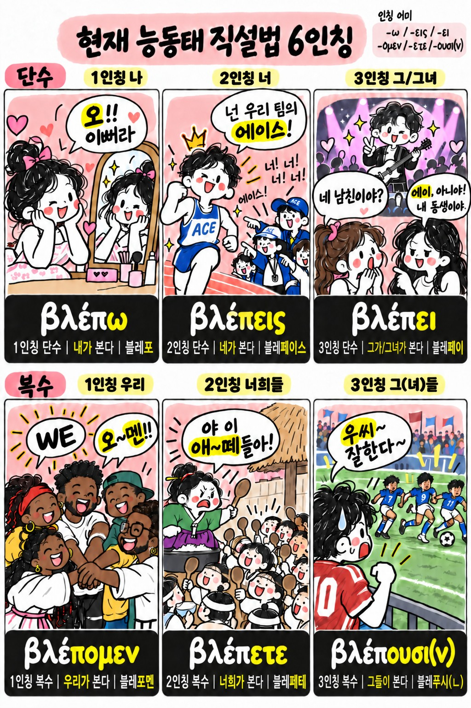
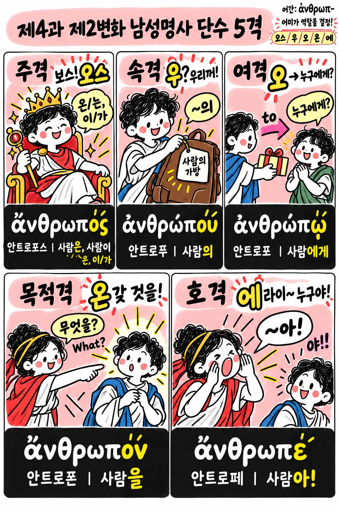
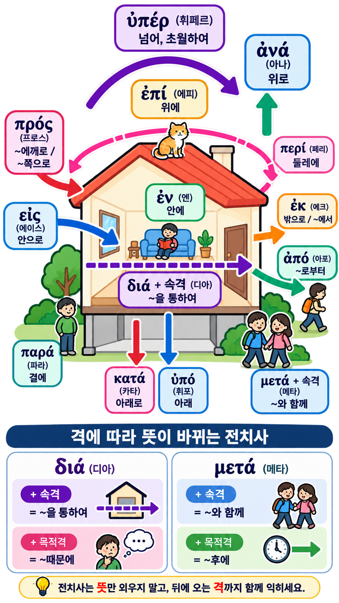

사진의 큰 동그라미 범위 + 출제 규칙을 반영한 공부판
제3과: 현재 능동태 직설법 · 동사 8개 · 6인칭 어미 · 연습 22
제4과: 제2변화 명사 · 성/수/격 · 남성/중성 변화 · 연습 43
제5과: 제1변화 여성명사 · α/η 변화 · 연습 57
해석문제 실제 출제: 홀수과는 홀수 번호, 짝수과는 짝수 번호. 따라서 3과 1·3·5·7·9 / 4과 2·4·6·8·10·12·14·16·18·20 / 5과 1·3·5·7·9·11·13·15·17을 기본 시험모드로 설정했다.
오늘 반드시 외울 3축
동사 끝: -ω, -εις, -ει / -ομεν, -ετε, -ουσι(ν)
제2변화 남성: -ος, -ου, -ῳ, -ον, -ε / -οι, -ων, -οις, -ους
제1변화 여성: α형·η형을 주격/속격/여격/목적격으로 끝만 보고 판별
공부 순서
- 읽기기초 10분: 글자와 자주 나오는 이중모음
- 단어 30분: 카드를 앞뒤로 반복
- 동사어미 + 명사격변화 표를 소리 내어 3회
- 어미판별훈련에서 끝만 보고 맞히기
- 연습문제에서 실제 출제 번호만 해석
- 쓰기훈련으로 헬라어를 직접 입력
헬라어 읽기 기초 — 한글 보조발음
시험 직전 학습용 보조 표기다. 단어마다 앱 안에 한글 발음을 따로 붙였으므로 이 표를 완벽히 외우지 않아도 된다.
자주 나오는 결합
αι
아이
아이
ει
에이
에이
οι
오이
오이
ου
우
우
ω
오(길게)
오(길게)
υ
위/뤼 계열
위/뤼 계열
단어 카드
제3과 — 현재 능동태 직설법
시험용 핵심: 동사는 맨 끝 어미가 인칭과 수를 알려준다. 먼저 끝을 보고 “누가 하는가”를 판단한다.
| 인칭 | 대표형 | 어미 | 한글 읽기 | 뜻 |
|---|---|---|---|---|
| 1인칭 단수 | λύω | -ω | 오 | 내가 ~한다 |
| 2인칭 단수 | λύεις | -εις | 에이스 | 네가 ~한다 |
| 3인칭 단수 | λύει | -ει | 에이 | 그/그녀가 ~한다 |
| 1인칭 복수 | λύομεν | -ομεν | 오멘 | 우리가 ~한다 |
| 2인칭 복수 | λύετε | -ετε | 에테 | 너희가 ~한다 |
| 3인칭 복수 | λύουσι(ν) | -ουσι(ν) | 우시(ㄴ) | 그들이 ~한다 |
외우는 소리: 오–에이스–에이 / 오멘–에테–우시(ㄴ)
그림으로 6인칭 익히기
동사를 골라 그림으로 어미를 익히고, 바로 아래 기존 6인칭 표에서 다시 확인하세요.

동사 그림 파일을 찾지 못했습니다.
원본 그림 그대로 · 어미 반복 기억용
8개 동사를 6인칭으로 보기
행을 눌러도 되고, 표를 좌우로 밀어서 볼 수 있다. 빨간 부분이 시험에서 먼저 확인할 어미다.
격부터 이해하기
N 주격
~이/가, ~은/는
~이/가, ~은/는
G 속격
~의
~의
D 여격
~에게, ~로
~에게, ~로
A 목적격
~을/를
~을/를
V 호격
~아, ~여
~아, ~여
판별 순서: ① 단어 끝 보기 → ② 단수/복수 후보 찾기 → ③ 성과 변화형 확인 → ④ 문장에서 주어·소유·간접목적어·목적어 역할 확인.
그림으로 격 익히기
성·수 조합을 눌러 원본 그림을 보고 격의 역할과 어미를 연결해서 기억하세요.

명사 그림 파일을 찾지 못했습니다.
원본 그림 그대로 · 주격/속격/여격/목적격/호격 기억용
제2변화 남성 — ἄνθρωπος 사람
제2변화 남성 — υἱός 아들
제2변화 중성 — δῶρον 선물
중성의 핵심: 주격 = 목적격 = 호격. 복수 주격/목적격/호격은 -α.
제1변화 여성 — 3가지 패턴
① 순수 α형 · ὥρα
② 혼합 α형 · δόξα
③ η형 · γραφή
βασιλεία, ἀλήθεια는 ὥρα형처럼 α를 유지한다. δόξα는 단수 속격·여격에서 η로 바뀐다. γραφή는 단수에서 η형이고 복수 어미는 α형과 같다.
끝만 보고 맞히는 어미 판별 훈련
단어 뜻을 몰라도 빨간 끝부분만 보고 형태를 먼저 찾는 연습이다.
어미 도표 — 한글 읽기까지
교재 연습문제 해석
기본 화면은 실제 출제 규칙만: 홀수 과는 홀수 번호, 짝수 과는 짝수 번호. “교재 전체보기”를 누르면 I·II 문제 전체를 볼 수 있습니다.
헬라어 직접 쓰기
문제를 보고 헬라어를 직접 입력한다. 악센트·숨표까지 완전히 맞으면 “완벽”, 기본 철자는 맞지만 기호가 다르면 따로 알려준다.
핵심정리
현재 범위에서 한눈에 알아야 할 핵심 형태를 빠르게 복습하는 곳입니다. 범위가 늘어나면 핵심 내용도 계속 추가할 수 있습니다.
1. 동사 현재 능동 직설법
ω · εις · ει / ομεν · ετε · ουσι(ν)
오 · 에이스 · 에이 / 오멘 · 에테 · 우시(ㄴ)
오 · 에이스 · 에이 / 오멘 · 에테 · 우시(ㄴ)
2. 제2변화 남성
ος · ου · ῳ · ον · ε / οι · ων · οις · ους
오스 · 우 · 오 · 온 · 에 / 오이 · 온 · 오이스 · 우스
오스 · 우 · 오 · 온 · 에 / 오이 · 온 · 오이스 · 우스
3. 제2변화 중성
ον · ου · ῳ · ον / α · ων · οις · α
온 · 우 · 오 · 온 / 아 · 온 · 오이스 · 아
온 · 우 · 오 · 온 / 아 · 온 · 오이스 · 아
4. 제1변화 여성 α형
α · ας · ᾳ · αν / αι · ων · αις · ας
아 · 아스 · 아 · 안 / 아이 · 온 · 아이스 · 아스
아 · 아스 · 아 · 안 / 아이 · 온 · 아이스 · 아스
5. 제1변화 여성 η형
η · ης · ῃ · ην / αι · ων · αις · ας
에 · 에스 · 에 · 엔 / 아이 · 온 · 아이스 · 아스
에 · 에스 · 에 · 엔 / 아이 · 온 · 아이스 · 아스
6. 제6과 — 형용사 · 관사 · 일치
핵심: 형용사와 관사는 그것이 수식하는 명사와 성 · 수 · 격이 일치합니다.
ἀγαθός, ἀγαθή, ἀγαθόν 변화
| 격 | 단수 | 복수 | ||||
|---|---|---|---|---|---|---|
| 남 | 여 | 중 | 남 | 여 | 중 | |
| N | ἀγαθός | ἀγαθή | ἀγαθόν | ἀγαθοί | ἀγαθαί | ἀγαθά |
| G | ἀγαθοῦ | ἀγαθῆς | ἀγαθοῦ | ἀγαθῶν | ἀγαθῶν | ἀγαθῶν |
| D | ἀγαθῷ | ἀγαθῇ | ἀγαθῷ | ἀγαθοῖς | ἀγαθαῖς | ἀγαθοῖς |
| A | ἀγαθόν | ἀγαθήν | ἀγαθόν | ἀγαθούς | ἀγαθάς | ἀγαθά |
| V | ἀγαθέ | ἀγαθή | ἀγαθόν | ἀγαθοί | ἀγαθαί | ἀγαθά |
관사 ὁ, ἡ, τό
| 격 | 단수 | 복수 | ||||
|---|---|---|---|---|---|---|
| 남 | 여 | 중 | 남 | 여 | 중 | |
| N | ὁ | ἡ | τό | οἱ | αἱ | τά |
| G | τοῦ | τῆς | τοῦ | τῶν | τῶν | τῶν |
| D | τῷ | τῇ | τῷ | τοῖς | ταῖς | τοῖς |
| A | τόν | τήν | τό | τούς | τάς | τά |
관사의 용법(교재 66): λόγος = 한 말씀, ὁ λόγος = 그 말씀 / λόγοι = 말씀들, οἱ λόγοι = 그 말씀들.
형용적 위치
ὁ ἀγαθὸς λόγος
ὁ λόγος ὁ ἀγαθός
→ 그 좋은 말씀
ὁ ἀγαθὸς λόγος
ὁ λόγος ὁ ἀγαθός
→ 그 좋은 말씀
서술적 위치
ὁ λόγος ἀγαθός
ἀγαθὸς ὁ λόγος
→ 그 말씀은 좋다
ὁ λόγος ἀγαθός
ἀγαθὸς ὁ λόγος
→ 그 말씀은 좋다
명사적 독립 용법: 형용사가 명사처럼 쓰일 수 있습니다. ὁ ἀγαθός = 그 선한 사람, τὸ ἀγαθόν = 그 좋은 것.
7. 제7과 — 제1변화 남성명사 · 전치사
교재 76번: -ης로 끝나는 제1변화 명사는 남성입니다. 이번 과의 μαθητής(제자), προφήτης(선지자)가 대표 예입니다.
전치사는 그림으로 방향을 먼저 기억

공간 / 집
ἐν (엔 · 안에 · +여격)
ἐν (엔 · 안에 · +여격)
εἰς에이스 · +목적격 · 안으로→
ἐκ에크 · +속격 · 밖으로→
ἀπό아포 · +속격 · ~로부터→
πρός프로스 · +목적격 · ~에게로→
διά디아 · +속격 · ~을 통하여→
| 전치사 | 발음 | 지배격 | 뜻 |
|---|---|---|---|
| ἀπό | 아포 | 속격 | ~에게서, ~로부터 |
| ἐκ | 에크 | 속격 | ~밖으로 |
| διά | 디아 | 속격 | ~을 통하여 |
| διά | 디아 | 목적격 | ~때문에 |
| εἰς | 에이스 | 목적격 | ~안으로 |
| ἐν | 엔 | 여격 | ~안에 |
| μετά | 메타 | 속격 | ~와 함께 |
| μετά | 메타 | 목적격 | ~후에 |
| πρός | 프로스 | 목적격 | ~에게, ~에게로 |
시험 핵심: 전치사는 뜻만 외우지 말고, 뒤에 오는 격까지 한 덩어리로 익힙니다. 특히 διά + G ≠ διά + A, μετά + G ≠ μετά + A를 구별하세요.
8. 제8과 — 인칭대명사 · εἰμί
1·2인칭 대명사
| 격 | 1인칭 단수 | 1인칭 복수 |
|---|---|---|
| N | ἐγώ | ἡμεῖς |
| G | ἐμοῦ / μου | ἡμῶν |
| D | ἐμοί / μοι | ἡμῖν |
| A | ἐμέ / με | ἡμᾶς |
| 격 | 2인칭 단수 | 2인칭 복수 |
|---|---|---|
| N | σύ | ὑμεῖς |
| G | σοῦ / σου | ὑμῶν |
| D | σοί / σοι | ὑμῖν |
| A | σέ / σε | ὑμᾶς |
강세형과 후접형: 교재에서는 ἐμοῦ, ἐμοί, ἐμέ / σοῦ, σοί, σέ는 강조할 때 쓰는 강세형, 보통형 μου, μοι, με / σου, σοι, σε는 후접사라고 설명합니다.
3인칭 대명사 αὐτός
| 격 | 단수 | 복수 | ||||
|---|---|---|---|---|---|---|
| 남 | 여 | 중 | 남 | 여 | 중 | |
| N | αὐτός | αὐτή | αὐτό | αὐτοί | αὐταί | αὐτά |
| G | αὐτοῦ | αὐτῆς | αὐτοῦ | αὐτῶν | αὐτῶν | αὐτῶν |
| D | αὐτῷ | αὐτῇ | αὐτῷ | αὐτοῖς | αὐταῖς | αὐτοῖς |
| A | αὐτόν | αὐτήν | αὐτό | αὐτούς | αὐτάς | αὐτά |
εἰμί 현재 직설법 6인칭
| 인칭 | 형태 | 한글 보조 읽기 | 뜻 |
|---|---|---|---|
| 1인칭 단수 | εἰμί | 에이미 | 나는 …이다 / 있다 |
| 2인칭 단수 | εἶ | 에이 | 너는 …이다 / 있다 |
| 3인칭 단수 | ἐστί(ν) | 에스티(ㄴ) | 그/그녀/그것은 …이다 / 있다 |
| 1인칭 복수 | ἐσμέν | 에스멘 | 우리는 …이다 / 있다 |
| 2인칭 복수 | ἐστέ | 에스테 | 너희는 …이다 / 있다 |
| 3인칭 복수 | εἰσί(ν) | 에이시(ㄴ) | 그들은 …이다 / 있다 |
축약형 확인: 교재 연습문제의 ἀφ’ ὑμῶν, μεθ’ ἡμῶν / μεθ’ ὑμῶν처럼 강기식을 가진 모음 앞에서는 전치사의 끝모음과 자음이 변할 수 있습니다.